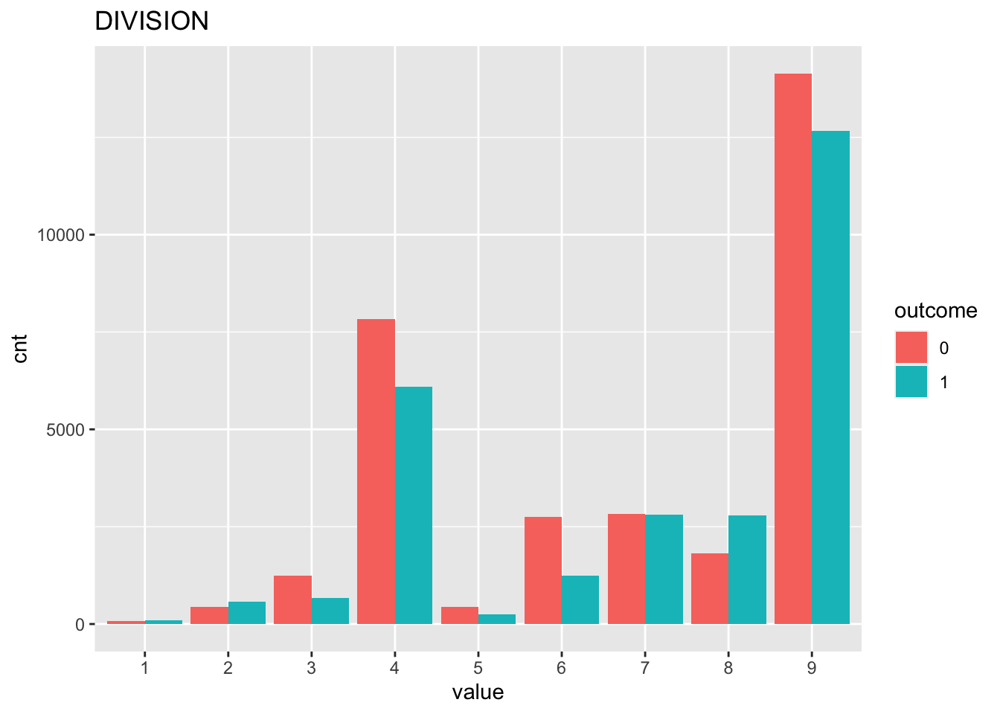
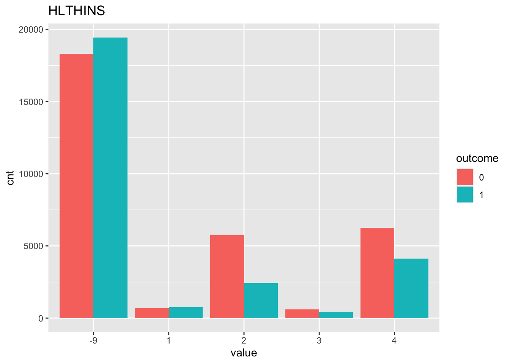
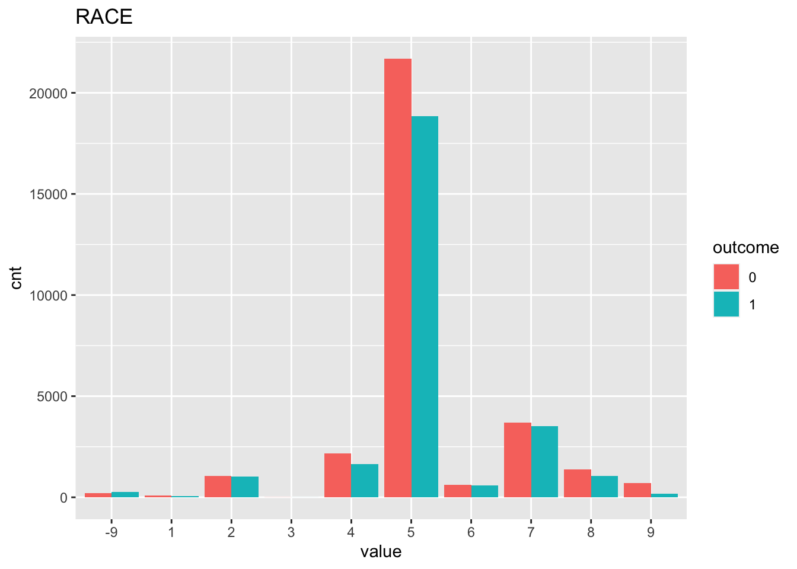
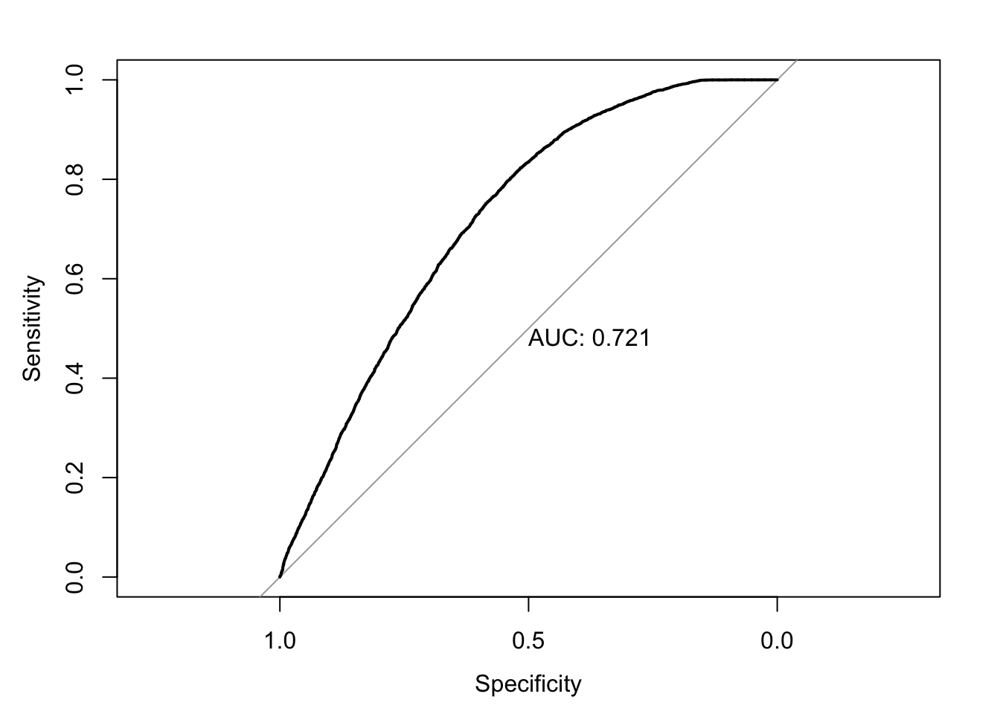
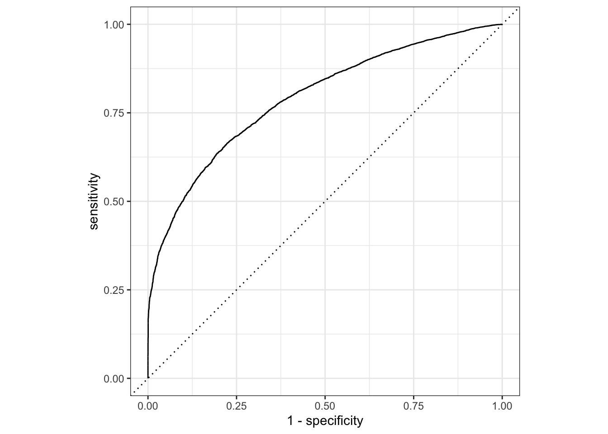
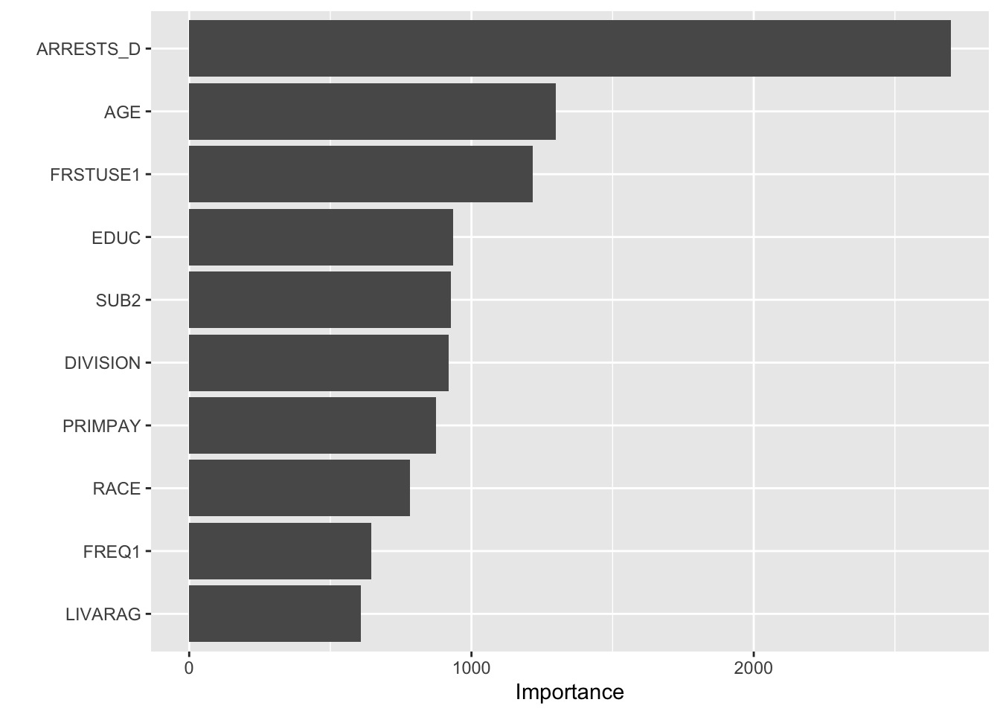

Last updated: 2020-12-18
Checks: 6 1
Knit directory: teds_ml/
This reproducible R Markdown analysis was created with workflowr (version 1.6.2). The Checks tab describes the reproducibility checks that were applied when the results were created. The Past versions tab lists the development history.
The R Markdown is untracked by Git. To know which version of the R Markdown file created these results, you’ll want to first commit it to the Git repo. If you’re still working on the analysis, you can ignore this warning. When you’re finished, you can run wflow_publish to commit the R Markdown file and build the HTML.
Great job! The global environment was empty. Objects defined in the global environment can affect the analysis in your R Markdown file in unknown ways. For reproduciblity it’s best to always run the code in an empty environment.
The command set.seed(20201124) was run prior to running the code in the R Markdown file. Setting a seed ensures that any results that rely on randomness, e.g. subsampling or permutations, are reproducible.
Great job! Recording the operating system, R version, and package versions is critical for reproducibility.
Nice! There were no cached chunks for this analysis, so you can be confident that you successfully produced the results during this run.
Great job! Using relative paths to the files within your workflowr project makes it easier to run your code on other machines.
Great! You are using Git for version control. Tracking code development and connecting the code version to the results is critical for reproducibility.
The results in this page were generated with repository version be9f492. See the Past versions tab to see a history of the changes made to the R Markdown and HTML files.
Note that you need to be careful to ensure that all relevant files for the analysis have been committed to Git prior to generating the results (you can use wflow_publish or wflow_git_commit). workflowr only checks the R Markdown file, but you know if there are other scripts or data files that it depends on. Below is the status of the Git repository when the results were generated:
Ignored files:
Ignored: .DS_Store
Ignored: .Rhistory
Ignored: analysis/.DS_Store
Untracked files:
Untracked: analysis/alc_completion_2017.Rmd
Untracked: analysis/cocaine_completion_2017.Rmd
Untracked: analysis/meth_completion_2017.Rmd
Untracked: analysis/mj_completion_2017.Rmd
Untracked: analysis/opioid_completion_2017_medicaid.Rmd
Untracked: analysis/tx_completion_2017.Rmd
Untracked: analysis/tx_completion_2017_lg.Rmd
Untracked: data/.ipynb_checkpoints/
Untracked: data/TEDS-D-2007-DS0001-data-excel.tsv
Untracked: data/clean_data.ipynb
Untracked: data/expansion-status-interactive-map_10.1.20-2.csv
Untracked: data/medicaid_expansion.csv
Untracked: data/teds4aequitas.csv
Untracked: data/tedsa_puf_2017.csv
Untracked: data/tedsd_puf_2017.csv
Untracked: output/teds_predictions.csv
Untracked: tx_completion_2017.Rmd
Unstaged changes:
Deleted: analysis/feature_exploration.Rmd
Modified: analysis/index.Rmd
Modified: analysis/opioid_completion_2017.Rmd
Note that any generated files, e.g. HTML, png, CSS, etc., are not included in this status report because it is ok for generated content to have uncommitted changes.
There are no past versions. Publish this analysis with wflow_publish() to start tracking its development.
Refer to the codebook for variable descriptions.
Response: Successful completion of short or long-term methamphetamine treatment
Features: See myvars defined below.
mydata <- read.csv("data/tedsd_puf_2017.csv")
medexp <- read.csv("data/medicaid_expansion.csv")
# merge
mydata <- merge(mydata, medexp, by='STFIPS')
# filter
mydata <- mydata %>% filter(SUB1 == 10, SERVICES %in% c(4,5)) # marijuana
mydata$COMPLETED = ifelse(mydata$REASON==1, 1, 0) #create response variable
myvars <- c("ROUTE1", "FREQ1", "FRSTUSE1", "IDU", "ALCFLG", "COKEFLG", "BENZFLG", "PSYPROB", "HLTHINS", "PRIMPAY", "AGE", "GENDER", "LIVARAG", "DIVISION", "NOPRIOR", "EDUC", "HERFLG","RACE","MARSTAT","PRIMINC","ETHNIC","ARRESTS_D", "SUB2", "MEDEXP")
response = "COMPLETED"
teds <- as.data.frame(lapply(mydata[myvars], factor))
teds[, response] = mydata[, response]First, we check to see if our classes are balanced.
table(teds[,response])
0 1
31576 27191 In this case it looks ok! Next, we can vizualize some (or all) of the relationships between the features and the response. Here we just look at 3 of the variables so it’s less chaotic.
sbs_response_plots(teds, c("DIVISION", "HLTHINS", "RACE"), response)
Next, split the data into training and testing sets, using 3/4 of the data for training and holding out 1/4 for testing.
set.seed(123) #for replicability
teds_split = initial_split(teds, prop=3/4)
# extract training and testing sets
teds_train <- training(teds_split)
teds_test <- testing(teds_split)Now, we fit a logistic regression model on our training data. We display the coefficients as well as the predictive performance on the test data.
fm <- as.formula(paste(response, "~ ."))
lg = glm(fm, family=binomial, data=teds_train)
summary(lg)
Call:
glm(formula = fm, family = binomial, data = teds_train)
Deviance Residuals:
Min 1Q Median 3Q Max
-2.5335 -1.1052 -0.2495 1.0274 3.2560
Coefficients:
Estimate Std. Error z value Pr(>|z|)
(Intercept) 0.6201513 0.7680660 0.807 0.419425
ROUTE11 -0.1549738 0.1538226 -1.007 0.313702
ROUTE12 -0.1297510 0.1351314 -0.960 0.336963
ROUTE13 -0.0990355 0.1393986 -0.710 0.477426
ROUTE14 -0.2713499 0.1676453 -1.619 0.105534
ROUTE15 0.0043112 0.2027111 0.021 0.983032
FREQ11 -0.0552882 0.0459335 -1.204 0.228722
FREQ12 -0.1994037 0.0441749 -4.514 6.36e-06 ***
FREQ13 -0.2717320 0.0473014 -5.745 9.21e-09 ***
FRSTUSE11 -0.6255441 0.1543557 -4.053 5.06e-05 ***
FRSTUSE12 -0.3522126 0.1399480 -2.517 0.011845 *
FRSTUSE13 -0.3625379 0.1388643 -2.611 0.009035 **
FRSTUSE14 -0.3114080 0.1388973 -2.242 0.024961 *
FRSTUSE15 -0.3020896 0.1399602 -2.158 0.030897 *
FRSTUSE16 -0.3403452 0.1407237 -2.419 0.015583 *
FRSTUSE17 -0.4197556 0.1406754 -2.984 0.002846 **
IDU0 -0.1238804 0.0462049 -2.681 0.007338 **
IDU1 -0.0342250 0.1017167 -0.336 0.736514
ALCFLG1 -0.0004211 0.0537256 -0.008 0.993746
COKEFLG1 -0.0703744 0.0953634 -0.738 0.460539
BENZFLG1 -0.0088321 0.0939176 -0.094 0.925077
PSYPROB1 -0.4062978 0.0458684 -8.858 < 2e-16 ***
PSYPROB2 -0.3828080 0.0440862 -8.683 < 2e-16 ***
HLTHINS1 0.6071178 0.1035827 5.861 4.60e-09 ***
HLTHINS2 0.2129913 0.0677782 3.142 0.001675 **
HLTHINS3 0.1867820 0.0981814 1.902 0.057117 .
HLTHINS4 0.3445220 0.0653224 5.274 1.33e-07 ***
PRIMPAY1 -0.9576635 0.0998946 -9.587 < 2e-16 ***
PRIMPAY2 -0.9324310 0.1223298 -7.622 2.49e-14 ***
PRIMPAY3 -1.1272763 0.3472493 -3.246 0.001169 **
PRIMPAY4 -1.3015368 0.0673660 -19.320 < 2e-16 ***
PRIMPAY5 -1.0409663 0.0600658 -17.330 < 2e-16 ***
PRIMPAY6 -1.4130815 0.1211497 -11.664 < 2e-16 ***
PRIMPAY7 -0.5061997 0.0755420 -6.701 2.07e-11 ***
AGE2 -0.2014906 0.4611975 -0.437 0.662194
AGE3 -0.4506262 0.4547362 -0.991 0.321704
AGE4 -0.3053857 0.4528344 -0.674 0.500065
AGE5 -0.2134809 0.4523683 -0.472 0.636985
AGE6 -0.1153313 0.4524287 -0.255 0.798788
AGE7 -0.0930334 0.4527297 -0.205 0.837186
AGE8 -0.0773536 0.4534946 -0.171 0.864560
AGE9 -0.0359318 0.4541100 -0.079 0.936933
AGE10 0.0333968 0.4552433 0.073 0.941519
AGE11 0.1903724 0.4575051 0.416 0.677330
AGE12 0.0226316 0.5479640 0.041 0.967056
GENDER1 -0.2552197 0.5436993 -0.469 0.638774
GENDER2 -0.2930170 0.5437240 -0.539 0.589951
LIVARAG1 -0.6055234 0.1052618 -5.753 8.79e-09 ***
LIVARAG2 -0.4176256 0.1052572 -3.968 7.26e-05 ***
LIVARAG3 -0.5131795 0.1048648 -4.894 9.89e-07 ***
DIVISION2 -0.4141196 0.2105963 -1.966 0.049251 *
DIVISION3 -1.0936799 0.2042301 -5.355 8.55e-08 ***
DIVISION4 -0.6881615 0.1980018 -3.476 0.000510 ***
DIVISION5 -0.0885191 0.2290976 -0.386 0.699214
DIVISION6 -0.8538435 0.2019346 -4.228 2.35e-05 ***
DIVISION7 -0.0538774 0.1996322 -0.270 0.787250
DIVISION8 -0.0470447 0.1993152 -0.236 0.813408
DIVISION9 -0.5243855 0.2032036 -2.581 0.009863 **
NOPRIOR0 -1.3277962 0.1142460 -11.622 < 2e-16 ***
NOPRIOR1 -1.2221342 0.1133292 -10.784 < 2e-16 ***
EDUC1 -0.2865811 0.1065104 -2.691 0.007132 **
EDUC2 -0.1719957 0.0970834 -1.772 0.076456 .
EDUC3 -0.0712726 0.0960547 -0.742 0.458087
EDUC4 -0.1216134 0.0981475 -1.239 0.215313
EDUC5 -0.0531509 0.1115983 -0.476 0.633882
HERFLG1 -0.0060053 0.1086943 -0.055 0.955940
RACE1 -0.6704707 0.2485328 -2.698 0.006982 **
RACE2 -0.6689004 0.1390660 -4.810 1.51e-06 ***
RACE3 0.6698452 1.2081056 0.554 0.579265
RACE4 -0.7795703 0.1349637 -5.776 7.64e-09 ***
RACE5 -0.4561251 0.1276063 -3.574 0.000351 ***
RACE6 -0.6577863 0.1474130 -4.462 8.11e-06 ***
RACE7 -0.6329981 0.1303171 -4.857 1.19e-06 ***
RACE8 -0.7994654 0.1361521 -5.872 4.31e-09 ***
RACE9 -1.6705698 0.1677357 -9.960 < 2e-16 ***
MARSTAT1 0.0977174 0.0656092 1.489 0.136386
MARSTAT2 0.0790273 0.0755573 1.046 0.295596
MARSTAT3 0.0454503 0.0817406 0.556 0.578190
MARSTAT4 0.0653034 0.0724502 0.901 0.367399
PRIMINC1 0.2646307 0.0717879 3.686 0.000228 ***
PRIMINC2 -0.1280237 0.0848497 -1.509 0.131343
PRIMINC3 -0.2050779 0.0886341 -2.314 0.020681 *
PRIMINC4 -0.0479187 0.0751337 -0.638 0.523618
PRIMINC5 0.0507074 0.0626756 0.809 0.418489
ETHNIC1 -0.2162948 0.1375234 -1.573 0.115769
ETHNIC2 0.1711128 0.0709233 2.413 0.015837 *
ETHNIC3 0.0627979 0.0875039 0.718 0.472968
ETHNIC4 0.0076700 0.0686129 0.112 0.910992
ETHNIC5 0.0200838 0.1152582 0.174 0.861669
ARRESTS_D0 3.6090495 0.0856073 42.158 < 2e-16 ***
ARRESTS_D1 2.3447750 0.1027230 22.826 < 2e-16 ***
ARRESTS_D2 3.0192520 0.1335734 22.604 < 2e-16 ***
SUB21 -0.0120528 0.0786569 -0.153 0.878215
SUB22 0.0410358 0.0959450 0.428 0.668869
SUB23 -0.0836990 0.1352031 -0.619 0.535876
SUB24 -0.0254200 0.0783908 -0.324 0.745731
SUB25 -0.0958511 0.1372237 -0.699 0.484863
SUB26 -0.7626055 0.2980731 -2.558 0.010514 *
SUB27 -0.2260643 0.0894270 -2.528 0.011474 *
SUB28 -0.1977075 0.2343500 -0.844 0.398870
SUB29 -0.2517756 0.2159547 -1.166 0.243666
SUB211 0.1582972 0.1825588 0.867 0.385886
SUB212 -0.2744954 0.2492064 -1.101 0.270689
SUB213 -0.0722755 0.1505371 -0.480 0.631144
SUB214 1.5456592 0.6642646 2.327 0.019972 *
SUB215 -0.2487533 0.4619320 -0.539 0.590227
SUB216 -0.2724852 0.2220653 -1.227 0.219804
SUB217 1.3685585 0.4950440 2.765 0.005701 **
SUB218 -1.4585419 0.5272007 -2.767 0.005665 **
SUB219 0.0660674 0.1359795 0.486 0.627064
MEDEXP1 0.4854307 0.0401602 12.087 < 2e-16 ***
---
Signif. codes: 0 '***' 0.001 '**' 0.01 '*' 0.05 '.' 0.1 ' ' 1
(Dispersion parameter for binomial family taken to be 1)
Null deviance: 60846 on 44075 degrees of freedom
Residual deviance: 52065 on 43965 degrees of freedom
AIC: 52287
Number of Fisher Scoring iterations: 5test_prob = predict(lg, newdata = teds_test, type = "response")
test_roc = roc(teds_test$COMPLETED ~ test_prob, plot = TRUE, print.auc = TRUE)
For this experiment, our baseline AUC using logistic regression is 0.69.
Next, we fit a random forest model to the same training data. We are just using the default parameterizations here; previous experimentation showed that there wasn’t much variance across parameters, so I’m comfortable doing this for these experiments.
rf <- teds_rf(teds, myvars, response)The rf_cv object returned includes 4 things: the model specification, the test performance, and the test predictions. First we look at the test performance:
rf$test_performance# A tibble: 2 x 3
.metric .estimator .estimate
<chr> <chr> <dbl>
1 accuracy binary 0.716
2 roc_auc binary 0.791In this case, we see that the AUC=0.742 on the test set, an improvement over the logistic regression. We can use the test predictions to generate the ROC curve:
# plot roc cruve
autoplot(roc_curve(rf$test_predictions, !!response, .pred_0))
Finally, we compute and visualize the feature importances.
teds[,response] = as.factor(teds[[response]])
final_model <- fit(rf$model, teds)
final_model %>%
pull_workflow_fit() %>%
vip()
sessionInfo()R version 4.0.0 (2020-04-24)
Platform: x86_64-apple-darwin17.0 (64-bit)
Running under: macOS 10.16
Matrix products: default
BLAS: /Library/Frameworks/R.framework/Versions/4.0/Resources/lib/libRblas.dylib
LAPACK: /Library/Frameworks/R.framework/Versions/4.0/Resources/lib/libRlapack.dylib
locale:
[1] en_US.UTF-8/en_US.UTF-8/en_US.UTF-8/C/en_US.UTF-8/en_US.UTF-8
attached base packages:
[1] stats graphics grDevices utils datasets methods base
other attached packages:
[1] gridExtra_2.3 reshape2_1.4.4 vip_0.2.2 pROC_1.16.2
[5] yardstick_0.0.7 workflows_0.2.1 tune_0.1.1 rsample_0.0.8
[9] recipes_0.1.14 parsnip_0.1.4 modeldata_0.1.0 infer_0.5.3
[13] dials_0.0.9 scales_1.1.1 broom_0.7.2 tidymodels_0.1.1
[17] forcats_0.5.0 stringr_1.4.0 dplyr_1.0.2 purrr_0.3.4
[21] readr_1.3.1 tidyr_1.1.2 tibble_3.0.4 ggplot2_3.3.2
[25] tidyverse_1.3.0 workflowr_1.6.2
loaded via a namespace (and not attached):
[1] colorspace_1.4-1 ellipsis_0.3.1 class_7.3-16 rprojroot_1.3-2
[5] fs_1.4.1 rstudioapi_0.11 listenv_0.8.0 furrr_0.2.1
[9] farver_2.0.3 prodlim_2019.11.13 fansi_0.4.1 lubridate_1.7.8
[13] ranger_0.12.1 xml2_1.3.2 codetools_0.2-16 splines_4.0.0
[17] knitr_1.28 jsonlite_1.6.1 dbplyr_1.4.3 compiler_4.0.0
[21] httr_1.4.1 backports_1.1.8 assertthat_0.2.1 Matrix_1.2-18
[25] cli_2.0.2 later_1.1.0.1 htmltools_0.4.0 tools_4.0.0
[29] gtable_0.3.0 glue_1.4.1 Rcpp_1.0.4.6 cellranger_1.1.0
[33] DiceDesign_1.8-1 vctrs_0.3.4 iterators_1.0.12 timeDate_3043.102
[37] gower_0.2.1 xfun_0.13 globals_0.13.1 rvest_0.3.5
[41] lifecycle_0.2.0 future_1.19.1 MASS_7.3-51.5 ipred_0.9-9
[45] hms_0.5.3 promises_1.1.1 parallel_4.0.0 yaml_2.2.1
[49] rpart_4.1-15 stringi_1.4.6 foreach_1.5.0 lhs_1.0.2
[53] hardhat_0.1.4 lava_1.6.7 rlang_0.4.8 pkgconfig_2.0.3
[57] evaluate_0.14 lattice_0.20-41 labeling_0.3 tidyselect_1.1.0
[61] plyr_1.8.6 magrittr_1.5 R6_2.4.1 generics_0.0.2
[65] DBI_1.1.0 pillar_1.4.4 haven_2.2.0 withr_2.2.0
[69] survival_3.1-12 nnet_7.3-14 modelr_0.1.8 crayon_1.3.4
[73] utf8_1.1.4 rmarkdown_2.1 grid_4.0.0 readxl_1.3.1
[77] git2r_0.27.1 reprex_0.3.0 digest_0.6.25 httpuv_1.5.4
[81] GPfit_1.0-8 munsell_0.5.0